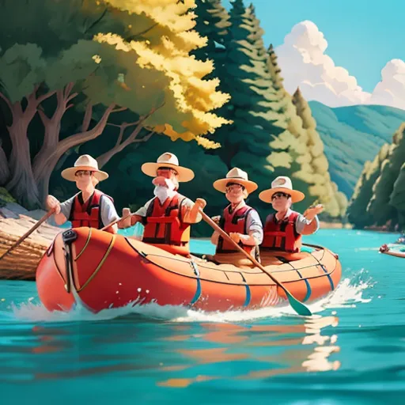

History
TAdventure Consultants, fruto da paixão inabalável de um grupo de amigos por aventura e natureza. Cada um trazia uma história de fascínio pelas correntezas, pelas descidas vertiginosas e pela sensação de liberdade que só o rafting pode oferecer. Unidos pelo desejo de compartilhar essa paixão, decidiram criar uma empresa que não apenas oferecesse viagens de rafting, mas experiências transformadoras..
Eles queriam que cada pessoa que remasse com eles sentisse a mesma emoção e conexão profunda com a natureza que os levou a seguir esse caminho. Assim, a Rafting Company Adventure Consultants se tornou mais do que uma empresa; tornou-se uma família, dedicada a aventuras inesquecíveis e à preservação dos rios selvagens que tanto amam
Adventure Awaits You!